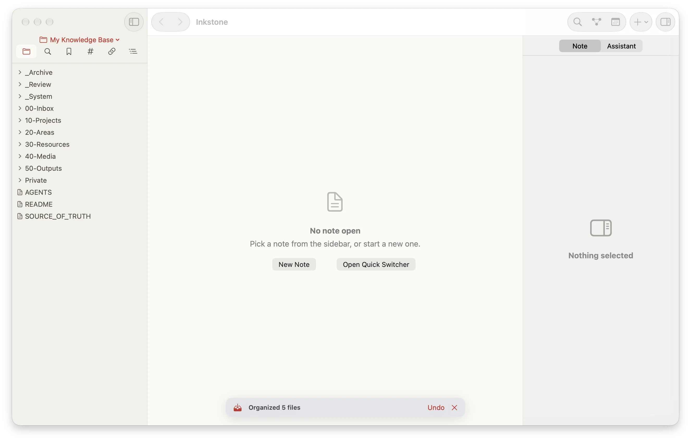

Inkstone › Base de connaissances IA
Une base de connaissances IA qui se range toute seule
Glissez notes, PDF, photos et enregistrements dans un dossier. Inkstone classe chaque fichier selon des règles écrites en mots simples, avec le modèle d'Apple sur l'appareil — et garde le dossier lisible par n'importe quel assistant IA.

Qu'est-ce qu'une base de connaissances IA ?
Un ensemble de vos propres notes et fichiers, rangé pour que vous et un assistant IA trouviez ce qu'il contient — avec, par écrit, où se trouvent les choses et à quel fichier se fier. C'est cette seconde partie qui la distingue d'un dossier de notes ordinaire : une IA ne peut pas vous demander où sont les factures.
Inkstone en fait un simple dossier de Markdown et de fichiers. Rien n'est enfermé dans une base de données ; n'importe quelle app et n'importe quel agent IA peut le lire.
Comment Inkstone la construit
- Une structure pour les humains et l'IA : boîte de réception, projets, domaines, ressources, médias, productions et privé — plus un dossier à vérifier pour l'incertain et des archives où attendent les doublons.
- D'abord la confidentialité : pièces d'identité, banque et santé vont au dossier privé. Puis vos règles, puis un projet que le fichier nomme, puis les médias par type et par mois.
- Le modèle sur l'appareil pour le reste. Il lit le début d'un fichier et propose un dossier et un titre ; s'il hésite, le fichier vous attend.
- Des noms lisibles d'un coup d'œil : 20261119-devis-travaux.md — la date, puis le sujet.
- Des fichiers d'entrée pour l'IA : AGENTS.md, README.md et SOURCE_OF_TRUTH.md, réécrits quand les dossiers changent.

Le laisser ranger sans crainte
Rien n'est supprimé. Chaque déplacement est noté avant d'avoir lieu, et une passe entière peut être annulée. Le texte d'une note n'est jamais réécrit. Les grosses passes et les doublons attendent votre accord.
Sur iPhone et iPad aussi
Ajoutez des fichiers depuis l'app Fichiers : ils arrivent dans la boîte de réception et sont classés de la même façon. La base de connaissances vit dans iCloud Drive, le Mac et l'iPhone voient le même dossier.

Questions
L'IA lit-elle tous mes fichiers ?
Le modèle sur l'appareil lit seulement le début d'un fichier que vos règles n'ont pas su placer, sur votre appareil. Un modèle cloud n'est utilisé qu'avec votre propre clé et activé ; il reçoit le nom et le début de ce fichier, vos noms de dossiers et vos règles, et les fichiers qui semblent privés ne sont jamais envoyés.
Est-ce compatible avec Obsidian ?
Un coffre Obsidian s'ouvre tel quel et n'est jamais réorganisé. Une base de connaissances créée par Inkstone est du Markdown ordinaire qu'Obsidian ouvre aussi.
Quels appareils ?
Mac (macOS 26), iPhone et iPad (iOS 26). Le modèle sur l'appareil demande Apple Intelligence ; sans lui, le rangement suit vos règles.
Combien ça coûte ?
Rien. Inkstone est gratuit sur Mac et sur l'App Store, sans compte.